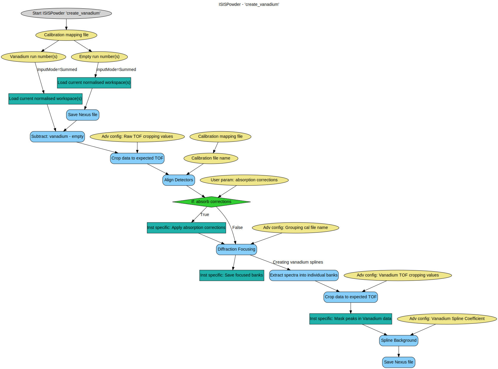
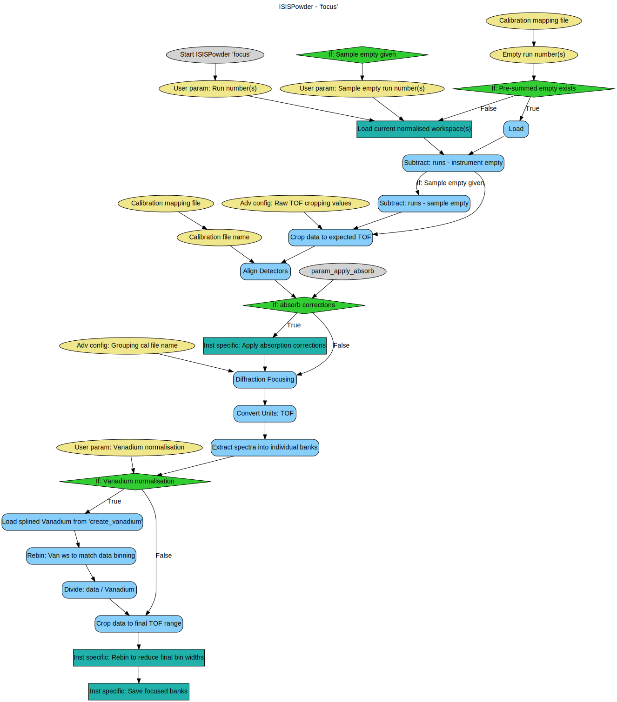
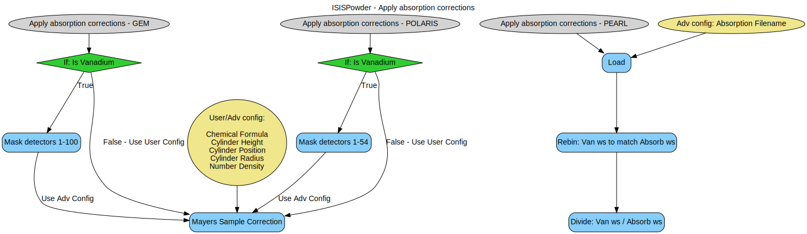
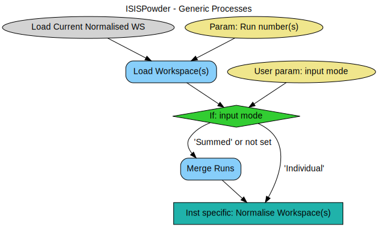
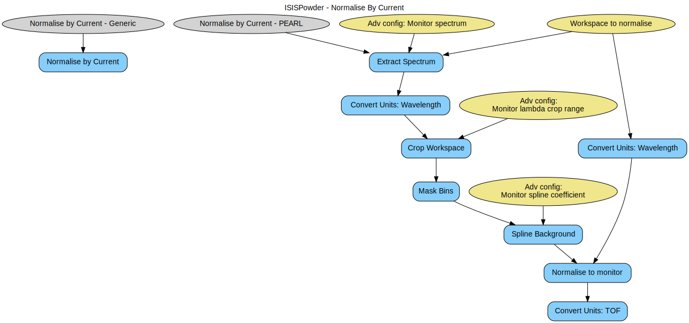
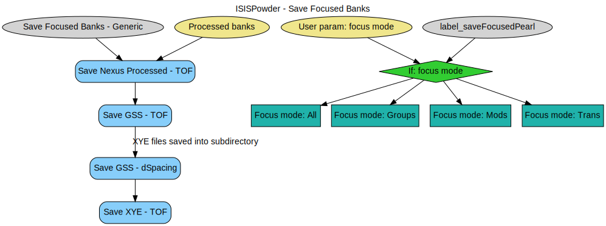
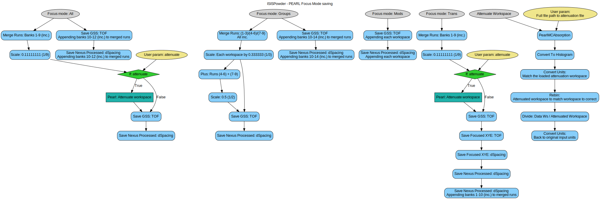

\(\renewcommand\AA{\unicode{x212B}}\)
ISIS Powder Diffraction Scripts Workflow Diagrams¶
Methods¶
create_vanadium¶
focus¶
Sub-Processes¶
Apply Absorption Corrections¶
Miscellaneous¶
Normalise By Current¶
Save Focused Banks¶
Instrument Specific¶
PEARL¶
Save Focused Banks - Focus Mode Handling¶
Category: Techniques